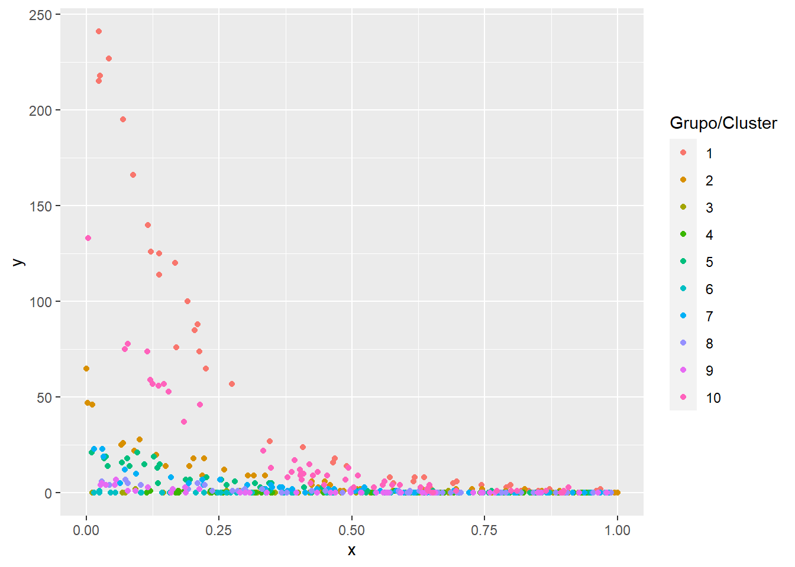
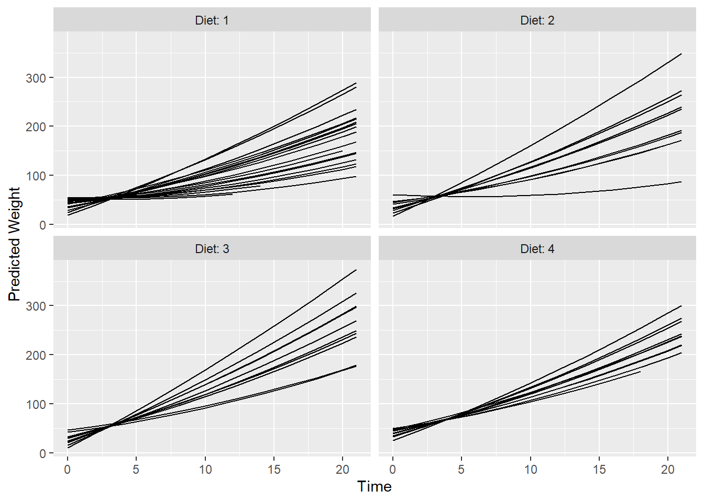

5 GLMM Poisson
En este capítulo se presenta un ejemplo de glmm con variable respuesta Poisson y está basado en esta publicación.

A continuación la base de datos a utilizar.
require(foreign)
datos <- read.dta("https://stats.idre.ucla.edu/stat/data/hsbdemo.dta")
# Cambios menores a algunas variables
datos$cid <- factor(datos$cid)
datos$female <- ifelse(datos$female == 'female', 1, 0)Los datos corresponden a una muestra de 200 estudiantes de educación secundaria, los cuales están agrupados en 20 escuelas diferentes. El propósito es modelar el número de premios que recibe un estudiante dada la escuela a la cual pertenece, teniendo en cuenta la variable género como la variable que mejor podría ayudar en la predicción.
Las variables de la base de datos son:
awards: Variable respuesta que hace referencia al número de premios que recibe un estudiante.id: Identificación única de los estudiantes de educación secundaria que participaron en el estudio.female: Variable correspondiente al género de los estudiantes.ses: Variable categórica que representa el estatus socioeconómico del estudiante, teniendo tres distinciones las cuales son: bajo, medio y alto.schtyp: Tipo de escuela, ya sea privado o público.prog: Programa de formación del estudiante, ya sea general, vocación o académico.read: Puntuación del estudiante en comprensión lectora.write: Puntuación del estudiante en escritura.math: Puntuación del estudiante en matemáticas.science: Puntuación del estudiante en ciencias.honors: Variable que hace referencia si el estudiante presenta matrículas de honor o no.cid: Variable que indica la escuela a la cual pertenece el estudiante.
Vamos a explorar las primeras líneas de la base de datos.
head(datos, n=10)## id female ses schtyp prog read write math science socst honors
## 1 45 1 low public vocation 34 35 41 29 26 not enrolled
## 2 108 0 middle public general 34 33 41 36 36 not enrolled
## 3 15 0 high public vocation 39 39 44 26 42 not enrolled
## 4 67 0 low public vocation 37 37 42 33 32 not enrolled
## 5 153 0 middle public vocation 39 31 40 39 51 not enrolled
## 6 51 1 high public general 42 36 42 31 39 not enrolled
## 7 164 0 middle public vocation 31 36 46 39 46 not enrolled
## 8 133 0 middle public vocation 50 31 40 34 31 not enrolled
## 9 2 1 middle public vocation 39 41 33 42 41 not enrolled
## 10 53 0 middle public vocation 34 37 46 39 31 not enrolled
## awards cid
## 1 0 1
## 2 0 1
## 3 0 1
## 4 0 1
## 5 0 1
## 6 0 1
## 7 0 1
## 8 0 1
## 9 0 1
## 10 0 1El siguiente código sirve para construir un histograma que muestra el número de premios por cada escuela.
require(ggplot2)
ggplot(datos, aes(awards)) +
geom_histogram(binwidth = 0.5) +
facet_wrap(~cid)
De la figura anterior vemos que el comportamiento de la variable respuesta awards es muy diferente dada la escuela.
En la siguiente figura se relaciona el número de premios awards con la variable género.
ggplot(datos, aes(factor(awards))) +
geom_bar(aes(fill = factor(female)), position = "fill") +
geom_hline(yintercept = 0.5)
De la figura anterior se observa una posible relación entre el número de premios está relacionado y el género.
Los modelos lineales generalizados mixtos nos permiten modelar la variable respuesta con la distribución Poisson o la binomial negativa, en este caso, vamos a usar la distribución Poisson.
El primer modelo que vamos a considerar aquí es el siguiente:
\[\begin{align*} y_{ij} | b_0 &\sim Poisson(\mu_{ij}) \\ \log(\mu_{ij}) &= \beta_0 + b_{0i} \\ b_0 &\sim N(0, \sigma_{b0}^2) \end{align*}\]
con \(i=1, 2, \ldots, 20\).
El modelo anterior se va a ajustar con la función glmer del paquete lme4 y utilizando 15 puntos en la aproximación de Gauss para la log-verosimilitud.
require(lme4)
m1 <- glmer(awards ~ 1 + (1 | cid), data = datos,
family = poisson(link = "log"), nAGQ = 15)Los resultados del modelo se muestran a continuación.
summary(m1)## Generalized linear mixed model fit by maximum likelihood (Adaptive
## Gauss-Hermite Quadrature, nAGQ = 15) [glmerMod]
## Family: poisson ( log )
## Formula: awards ~ 1 + (1 | cid)
## Data: datos
##
## AIC BIC logLik deviance df.resid
## 228.6 235.2 -112.3 224.6 198
##
## Scaled residuals:
## Min 1Q Median 3Q Max
## -1.3857 -0.5260 -0.3383 0.3379 3.3769
##
## Random effects:
## Groups Name Variance Std.Dev.
## cid (Intercept) 1.458 1.207
## Number of obs: 200, groups: cid, 20
##
## Fixed effects:
## Estimate Std. Error z value Pr(>|z|)
## (Intercept) -0.009572 0.290292 -0.033 0.974El segundo modelo que se propone es una modificación del modelo 1, agregando como variable explicativa el género femenino. El modelo propuesto es el siguiente:
\[\begin{align*} y_{ij} &\sim Poisson(\mu_{ij}) \\ \log(\mu_{ij}) &= \beta_0 + \beta_1 female_i + b_{0i} \\ b_0 &\sim N(0, \sigma_{b0}^2) \end{align*}\]
con \(i=1, 2, \ldots, 20\).
require(lme4)
m2 <- glmer(awards ~ 1 + female + (1 | cid), data = datos,
family = poisson(link = "log"), nAGQ = 15)Los resultados del modelo se muestran a continuación.
summary(m2)## Generalized linear mixed model fit by maximum likelihood (Adaptive
## Gauss-Hermite Quadrature, nAGQ = 15) [glmerMod]
## Family: poisson ( log )
## Formula: awards ~ 1 + female + (1 | cid)
## Data: datos
##
## AIC BIC logLik deviance df.resid
## 221.1 231.0 -107.6 215.1 197
##
## Scaled residuals:
## Min 1Q Median 3Q Max
## -1.5312 -0.5919 -0.3304 0.2047 2.8806
##
## Random effects:
## Groups Name Variance Std.Dev.
## cid (Intercept) 1.431 1.196
## Number of obs: 200, groups: cid, 20
##
## Fixed effects:
## Estimate Std. Error z value Pr(>|z|)
## (Intercept) -0.2229 0.2975 -0.749 0.45370
## female 0.3632 0.1193 3.044 0.00234 **
## ---
## Signif. codes: 0 '***' 0.001 '**' 0.01 '*' 0.05 '.' 0.1 ' ' 1
##
## Correlation of Fixed Effects:
## (Intr)
## female -0.252Para comparar los dos modelos ajustados propuestos colocamos los resultados en una única tabla como se muestra a continuación.
library("texreg")
screenreg(list(m1, m2))##
## ==========================================
## Model 1 Model 2
## ------------------------------------------
## (Intercept) -0.01 -0.22
## (0.29) (0.30)
## female 0.36 **
## (0.12)
## ------------------------------------------
## AIC 228.63 221.12
## BIC 235.23 231.01
## Log Likelihood -112.32 -107.56
## Num. obs. 200 200
## Num. groups: cid 20 20
## Var: cid (Intercept) 1.46 1.43
## ==========================================
## *** p < 0.001; ** p < 0.01; * p < 0.05library(stargazer)
stargazer(m1, m2, type = "html")| Dependent variable: | ||
| awards | ||
| (1) | (2) | |
| female | 0.363*** | |
| (0.119) | ||
| Constant | -0.010 | -0.223 |
| (0.290) | (0.298) | |
| Observations | 200 | 200 |
| Log Likelihood | -112.315 | -107.558 |
| Akaike Inf. Crit. | 228.630 | 221.116 |
| Bayesian Inf. Crit. | 235.227 | 231.011 |
| Note: | p<0.1; p<0.05; p<0.01 | |
- En los resultados que obtenemos de esta tabla podemos ver que la log-verosimilitud aument para el modelo 2 en relación ál modelo 1.
- Además podemos observar que tanto el AIC como el BIC del modelo 2 son menores que los del modelo 1.
- Por lo tanto, basados en esto, concluimos que el mejor modelo propuesto es el modelo 2, es decir, vale la pena agregarle como variable explicativa el género femenino, va a generar un modelo más confiable.
## QQ plot
plot(ranef(m2))## $cid
## Caterpillar plot
lattice::dotplot(ranef(m2, condVar = TRUE))## $cidLos modelos anteriores se pueden ajustar usando la función glmmadmb del paquete glmmADMB, a continuación se muestra el código. Para conocer más sobre este paquete se recomienda visitar este enlace
library(glmmADMB)
m1_alt <- glmmadmb(awards ~ 1 + (1 | cid), data = datos, family = "poisson", link = "log")
m2_alt <- glmmadmb(awards ~ 1 + female + (1 | cid), data = datos, family = "poisson", link = "log")